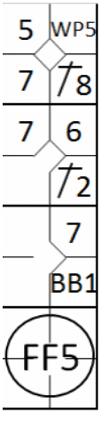
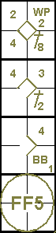
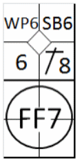

Un joueur de champ, après avoir attrapé une balle en vol, tombe sur un banc ou une tribune,
ou dans une foule de spectateurs sur le terrain.
Chaque coureur, autre que le batteur, peut, sans risque d’être retiré, avancer
d’une base quand … Un défenseur, après avoir attrapé un fly, marche ou tombe sur toute surface hors des
limites de jeu
[OBR 5.06(b)(3)(C)].
La règle stipule que dans une telle situation, les coureurs avancent d'une base
(la balle est morte). Cette avance légale est notée avec le numéro du frappeur qui a été retiré sur la balle en
l'air. Si le scoreur estime que le coureur en troisième base aurait atteint le marbre sans l'incident, le frappeur
se voit créditer d'un sacrifice (FSF).
Exemple 119:
Sans aucun retrait et avec les bases pleines, le septième frappeur envoie une courte balle en territoire
des fausses balles vers l'abri des joueurs de troisième base. Le joueur de champ effectue la prise, mais tombe
dans l'abri au moment de l'impact.
L'arbitre désigne le frappeur comme éliminé et tous les coureurs avancent d'une base.
Chaque avancée est notée avec le numéro du batteur.
|

|
action {
batter -> 1B8
}
action {
runner1 -> WP
}
action {
batter -> 1B2
,
runner2 -> +
}
action {
batter -> BB
,
runner1 -> +
}
action {
batter -> FF5
,
runner1 -> +
,
runner2 -> +
,
runner3 -> +
}
|

|
ATTENTION: Lorsque le joueur de champ, après avoir attrapé une balle fausse, se
retrouve dans l'abri mais ne tombe pas, le frappeur est déclaré éliminé et la balle reste en jeu.
Exemple 120:
Sans retrait et avec un coureur en troisième base, le frappeur envoie une longue balle en territoire des
fausses balles vers le champ gauche. Le défenseur du champ gauche, après une course effrénée, parvient à
attraper la balle mais tombe contre la clôture, se retrouvant hors du terrain. L'arbitre déclare le frappeur
retiré et le coureur marque.
L'avance est indiquée par le numéro du frappeur dans l'ordre de passage au bâton.
|

|
action {
batter -> 1B8
}
action {
runner1 -> SB
}
action {
runner2 -> WP
}
action {
batter -> FF7
,
runner3 -> +
}
|

|
ATTENTION: Si, de l'avis du scoreur, le coup frappé au champ extérieur aurait permis
au coureur de marquer dans tous les cas, il doit le comptabiliser comme un sacrifice fly, et le point est considéré
comme ayant été produit.
ATTENTION: Étant donné le nombre et la variété des causes possibles, il est essentiel,
en cas d'une de ces avancées particulières, de noter dans l'espace approprié du rapport de score le numéro de la
règle qui a donné lieu à l'avancée.